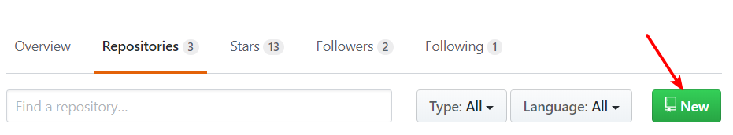
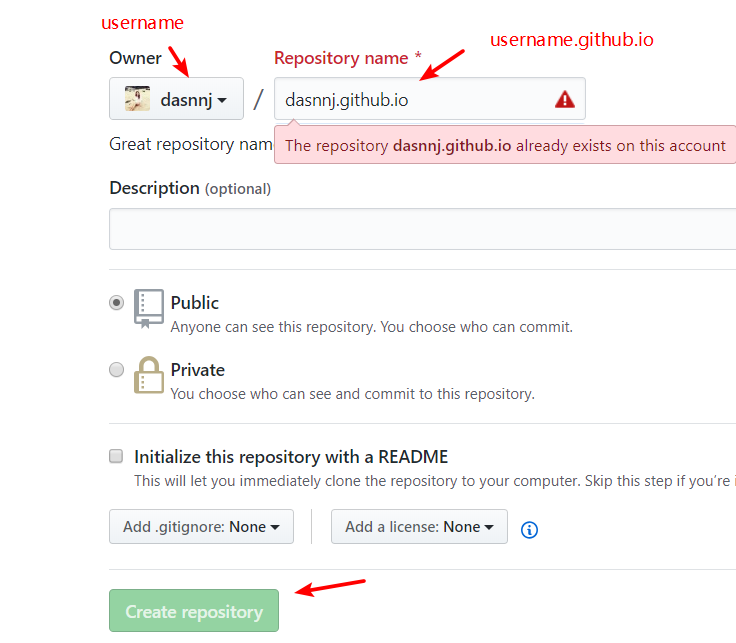
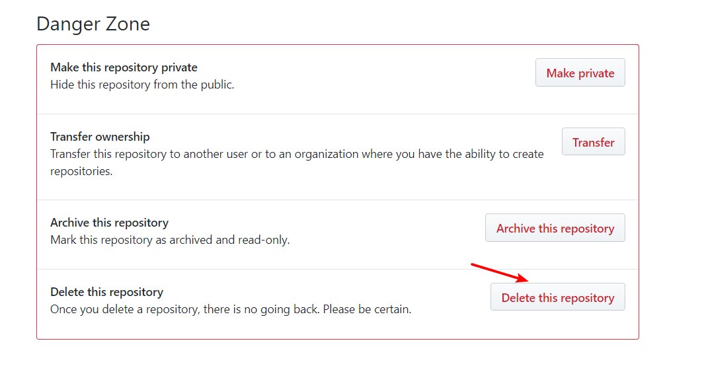
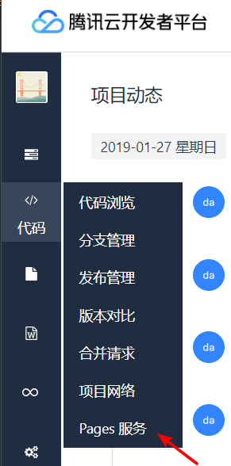

写在前面的话
其实我也是这两天才接触到Hexo，之前是用的wordpress在阿里云上挂着。觉得Hexo好像更符合现在我的审美，so, do it!
嗯前面安装git和node.js我这边就省略掉了。作为一个爱搞事的，这些东西电脑上都有
还有就是我照着网上的教程是没问题，但是走到一些页面的小功能的时候，就不起作用了，可能是版本更新不兼容了
一. 安装Hexo，初始化
npm install -g hexo全局安装Hexo 创建一个文件夹如blog，不用进去（可以用hexo -v检验是否安装成功）hexo init blog初始化这个blog和文件夹名字要一样，否则又创建个新的npm install安装所需要的依赖- 后面就
hexo s -g就是发布之前先生成静态文件 ，s:server，g:generate，访问下localhost:4000看ok不（不起作用，提示什么hexo <commands>什么东西了，就进到blog的目录下，使用hexo命令） - 应该没有5了，如果上面没成功，那你去搜搜别人的初始化都怎么弄的，然后再回来看我剩下的实践
二. 创建github公开库
有个point就是创建Repository的名字格式是 username.github.io，（看到有的博主只用的username就行，你可以尝试一下，不行的话删了就行）比如我的是 dasnnj.github.io，是为了能生成page服务

两步，输入Repository name，然后点击 create repository 按钮

建错删除的话，点进去新建的库，点击setting，点击最下面的删除，需要输入库的名字才能确认删除

没问题的话，还是要点进去setting，往下面滑动到GitHub Pages标题下面，照着那个链接点进去，不出意外就能直接访问到你的这个repository
三. 创建腾讯云开发者平台（或Coding）公开库
项目地址格式是 username.coding.me，格式不对会404哦，项目名称随便，确定就ok
创建完记得进入代码浏览，初始化一下项目，添加一个readme文档就行了
进入page服务，然后开启

四. 配置服务并将文件部署到Github
复制上面创建的两个库的git地址
修改最下面的deploy，格式类似我这样的
1
2
3
4
5
6
7
8# Deployment
## Docs: https://hexo.io/docs/deployment.html
deploy:
type: git
repo:
github: https://github.com/dasnnj/dasnnj.github.io.git,master
coding: https://git.dev.tencent.com/dasnnj/dasnnj.coding.me.git,master # 腾讯
# coding: https://git.coding.net/dasnnj/dasnnj.coding.me.git,master # Coding- 执行
hexo clean && hexo g && hexo s清除缓存，生成静态文件，本地发布 - 页面上没问题的话，就可以执行
hexo d - 会弹出输入github账号密码，和腾讯开发者平台的账号密码。后面通过生成ssh私钥，公钥就不用频繁输入用户名密码,参考windows生成git公钥
- 部署成功，按照各自平台的pages服务提示的网址即可访问
- 执行
五. 其他配置（目前都是关于博客根目录下面的_config.yaml的修改）
博客标题
1
2
3
4
5
6
7title: life is love # 主标题
subtitle: 记录生活和学习 # 副标题
description: Nothing is impossible, the word itself says I'm possible. # 个人描述
keywords:
author: Dasnnj # 用户
language: zh-CN # 语言，不填默认英文
timezone: Asia/Shanghai # 时区url
1
2
3
4
5
6url: / #这里如果你只部署了一个平台，那么填那个平台的地址，或者/都行，如果你部署在了两个平台上，那么就只写/吧
root: /
permalink: :year/:month/:day/:title/ # 链接格式https://newblog.dasnnj.cn/2019/01/26/标题名字/
# 也可设置为根据 category/:title/ 分类/标题名字
# category/:title.html会在标题名字后面加上.html
permalink_defaults:时间格式
1
2date_format: YYYY-MM-DD HH:mm:ss
time_format: HH:mm:ss这里给date加上小时分钟等，是为了解决新建页面，发表时间只显示日期没有时间
其他
1
2
3
4
5
6
7
8
9
10
11
12
13
14
15
16
17
18
19
20
21
22
23
24
25# Directory
source_dir: source #资源文件夹，这个文件夹用来存放内容
public_dir: public #公共文件夹，这个文件夹用于存放生成的站点文件。
tag_dir: tags # 标签文件夹
archive_dir: archives #归档文件夹
category_dir: categories #分类文件夹
code_dir: downloads/code #Include code 文件夹
i18n_dir: :lang #国际化（i18n）文件夹
skip_render: #跳过指定文件的渲染，您可使用 glob 表达式来匹配路径。
# Writing
new_post_name: :title.md # 新文章的文件名称
default_layout: post #预设布局
titlecase: false # 把标题转换为 title case
external_link: true # 在新标签中打开链接
filename_case: 0 #把文件名称转换为 (1) 小写或 (2) 大写
render_drafts: false #是否显示草稿
post_asset_folder: false #是否启动 Asset 文件夹
relative_link: false #把链接改为与根目录的相对位址
future: true #显示未来的文章
highlight: #内容中代码块的设置
enable: true
line_number: true
auto_detect: false
tab_replace:新建文章模板的key对应的含义
属性 描述title 标题slug 网址layout 布局。默认为 default_layout 参数。path 路径。默认会根据 new_post_path 参数创建文章路径。date 日期。默认为当前时间。我这篇文章的信息
1
2
3
4
5
6title: 将Hexo同时部署在github和腾讯云开发者平台或Coding初级实践教程
date: 2019-01-26 20:52:03
tags: [Hexo,github,coding] # 标签
categories:
- tech # 分类
- Hexo # tech的子分类
持续更新，下面大概要写我的next主题的一些配置，没有网上的大佬那样很全，但是对我来说很足够了（可能是版本不同，网上大佬的有部分可能不适用现在的，我这边会给出我的解决方法）
参考
hexo的目录结构 - 一直玩编程
官方文档


{kind=link}